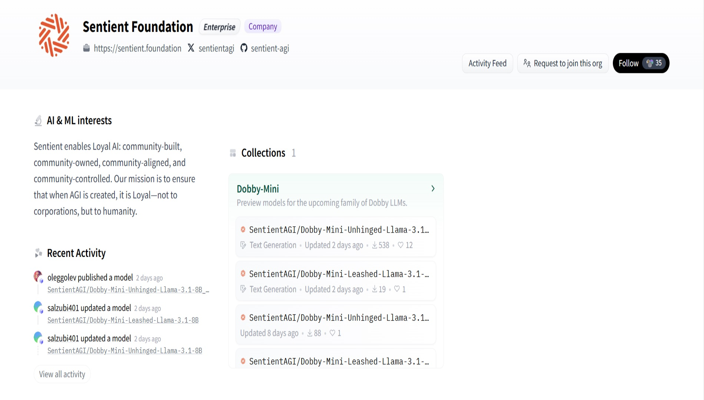
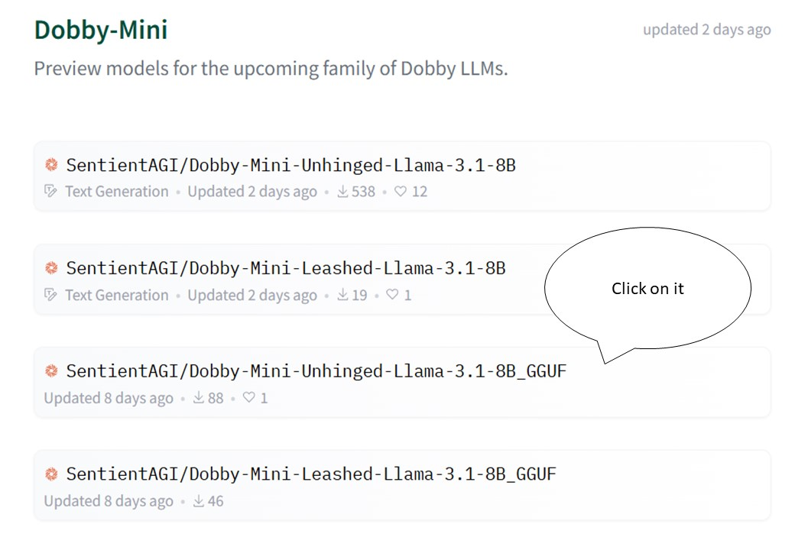
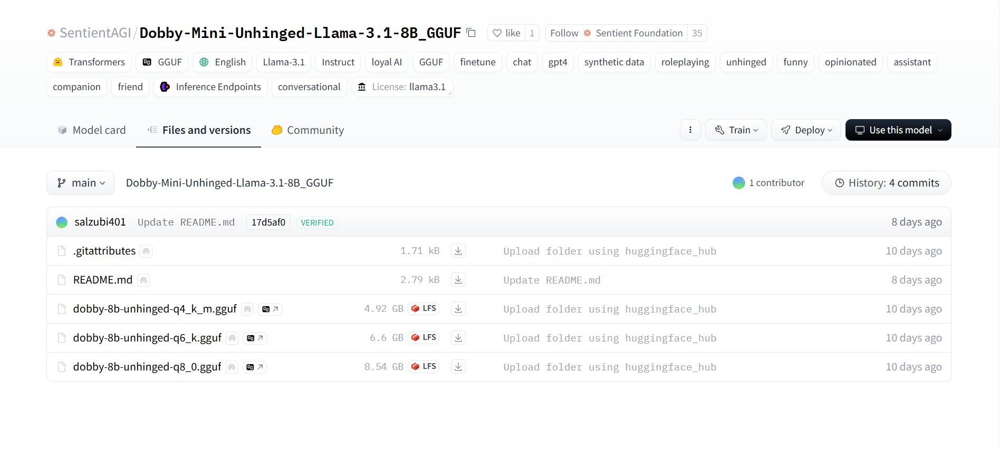
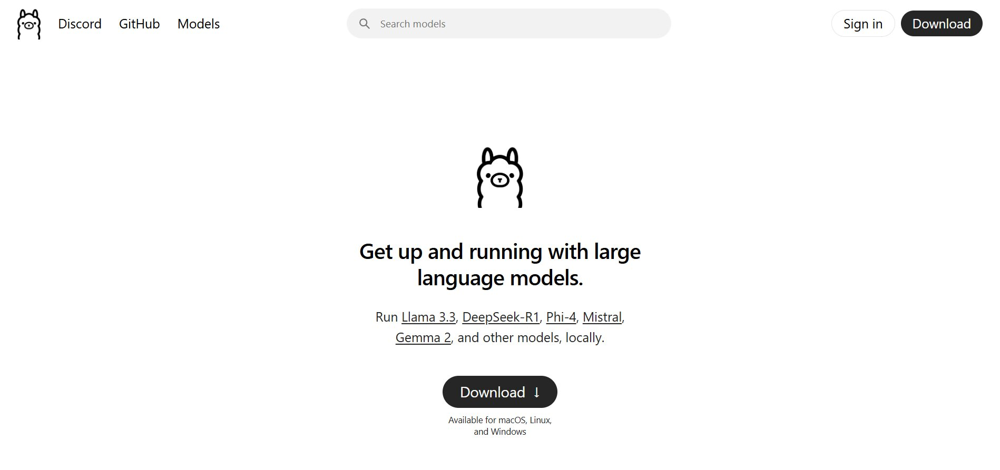

Check Out My Latest Blog
This blog is primarily focusing on How to use Sentient Project's AI Model, Dobby for Windows
Thanks to o7xabz for publishing its Guide in Ukranian
Launch of Sentient Project's AI model,
Dobby AI, on Windows
{kind=link}
Hello! Today we will talk about how to properly deploy the Dobby AI model locally on Windows.
Lets Move onto the Guide:
1. Loading the model
Go to the Huggingface website .
┃ If you don't have an account , create one. ┃
Go to the Sentient page.

Go to Models:
Go to the "Files and versions" page.
 Create a folder on your PC dobby_model (dobby-8b-unhinged-q4_k_m.gguf) and download the selected model there.2. Installing Ollama
Ollama is a tool (program) for running local models.
Download and install it from this link Once installed, run the application — it will open
in PowerShell. The application will automatically prompt you for the following
command to install. If this does not happen, review the installation details.

3. Create a file, “ Modelfile “
Modelfile is a simple file that tells Ollama where to get your model from.
To do this, open any text editor (I use Notepad++ ),Modelfile without the
.txt extension , and save it in the same folder as your model.
Enter the following line into the file and save the changes:
FROM ./dobby-8b-unhinged-q4_k_m.gguf
4. Model launch
When the Modelfile is ready, use the console to navigate to the folder where the model
and file are located, for example:
cd D:\dobby_model
ollama create dobby-unhinged -f Modelfile
-f Modelfile indicates that we are taking instructions from your Modelfile.
After executing this command, Ollama will "build" its internal database about the model.
This may take some time, depending on the file size and the power of your computer.
Now that the model is "created", you can run it:
ollama run dobby-unhinged
Thank you